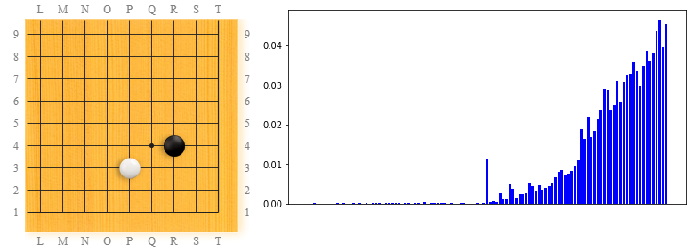
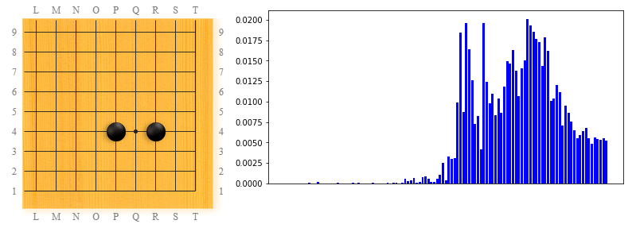
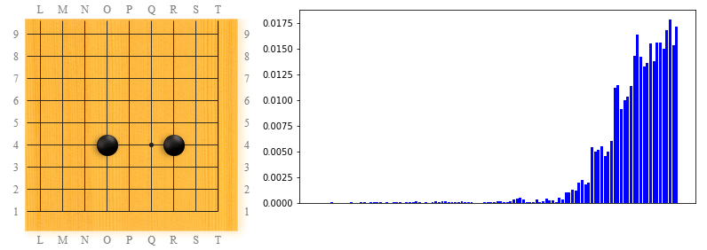
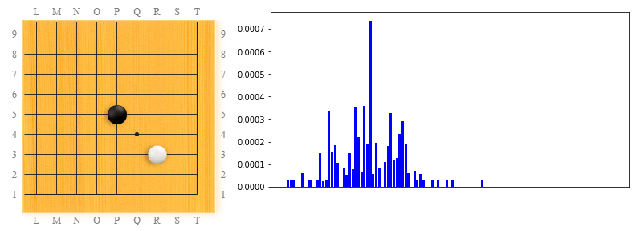
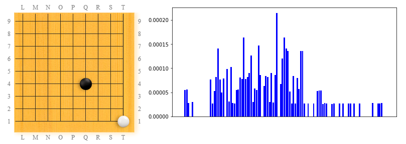

I was curious to see how an AlphaZero-like system discovers various Go patterns while training from self-play, from scratch.
So I did some data-mining on LeelaZero starting from the large SGF collection of self-play games from https://sjeng.org/zero/ by downloading the most recent all_sgf.xz file which is a concatenation of millions of SGF files from the training process. I filtered out about 5 early versions that have very few games, and ended up with about 110 versions.
The latest SGF collection at the time of this writing is from March 24 2018 which has version 1ccb7342 (about 9500 on the LeelaZero Elo scale). This most recent version from the analysis is stronger then the one which defeated Hajin Lee 4p in March 2018 so it is definitely mid-high pro level.
For each version, up to 1000 games were analyzed and all the corner, 9x9 sized patterns were extracted and kept if they:
Symmetries and color-swaps are taken into account so these transformations do not generate distinct patterns.
For each pattern, the plot next to it shows its frequency across the training versions. Taller bars mean that the pattern's relative frequency within a particular version is higher. Towards the left side of the plot there are earlier/weaker verioins, while towrds the right side are newer/stronger versions.
The x-axis are the training versions in chronological order, while the y-axis numbers are the frequency of the pattern within the same version. For instance, a value of 0.003 on the y-axis means that the pattern appeared on the average 3 times in each 1000 patterns in the given version.
As an example, here is the pattern with highest global frequency. The top value on the y-axis is about 0.05, which means this occured in 5% of the patterns in some version.
This pattern can occur in two different ways: either by black playing 4x4 in an empty corner, and white playing 3x3 later, or the other way around. The current analysis does not capture the ordering of moves, only the final result. From what we know by looking at LeelaZero's games, I guess that most often this occurs from white invading black's 4x4.
The plot on the righ shows some extremly low frequency in the first 1/3 of the versions, then it suddenly became quite popular.
Another quite frequent pattern (this is #13, where the first 12 spots are taken by patterns related to 3x3 invasions) is the very common "keima kakari". We can see the popularity trend pattern is quite different compared to the 3x3 invasion, the growth is very sharp. Interestingly, it had quite high popularity in an mid/early version, then it dropped again just before the sustained upwards trend.

Just next at #14 is "ikken shimari". This had a huge explosive growth at some point (up to 2% of the patterns in some version), then some drop, then enjoyed a 2nd youth, and we see it gradually dropping in popularity in the more recent versions for some reason.

I think the drop in popularity for the "ikken shimari" in recent versions is explained by the pattern at #19: "nikken shimari". This one became popular more recently, and it looks like a keeper at least for now, no retirement in sight (and judging by the fact that this is very popular in AlphaGo, it will take a while until LeelaZero or other such programs will be able to find better alternative, I guess).

For an example of a pattern that enjoyed some popularity in early versions and then completely disappeared, see this one (around #750 on the popularity list):

The last example in this quick overview is the pattern that is #1000 in global popularity: invasion at 1x1 against the opponent's 4x4! Interestingly, this still comes up in relatively recent versions, every now and then. That happens very rarely (about once in 250K patterns, and is mostly likely due to the artificial randomization for the fist 30 moves in self-play training games) but it is not "dead" yet in recent versions - unlike the pattern above - so it looks like LeelaZero still has some hopes for this variation.

This is just an overview. For more in-detail information, please visit one of the following: